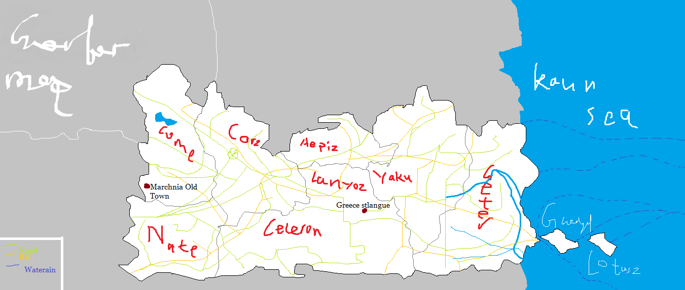

VIRTUAL CITYWIKI
Кщфъинэя Тйъфюие
虚 拟 城 市 百 科

高洛尔 高洛尔(高加索语:Gëolûr,高加索西里尔语：Ншычрп)是高加索共和国的首都及山脉州的首府，濒临卡恩海，人口541344, 面积约296610平方公里，主要种族是高加索族。
世界遗产
高洛尔的世界遗产有：(上图)
马其尼亚古城
希腊圣教堂
文化
高洛尔是格鲁吉亚-俄罗斯文化组中格鲁吉亚高加索文化，无宗教(虽然有教堂，但已被禁用。)，自由主义。